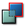

The three virtues of a programmer: Laziness, Impatience, and Hubris. – Larry Wall
Brush sinking
Brush sinking is a technique with BSP geometry that can be used to create a separate section on a larger BSP surface. It is commonly used to create trim if static meshes aren't available or if the trim should not change the actual shape of the surface.
Examples of this technique can be found in all Unreal Engine generations:
- UT's DM-Gothic uses it extensively for the carpets, DM-Grinder uses it for some trim.
- UT2004's CTF-Avaris has some nice nice floor ornaments created with brush sinking.
- UT3's VCTF-Suspense uses it to apply a different texture to the middle section of the large brush forming the road.
How to do it[edit]
Brush sinking works on surfaces created by added or subtracted solid brushes.
- Create a new brush with the desired shape, e.g. with the 2D Shape Editor or with one of the brush builders. The brush must not be a sheet, but actually have some thickness. The actual width doesn't matter, just make sure it fits into the geometry you want to sink the brush into.
- Position the builder brush inside the wall, floor, ceiling, etc., so the side with the desired shape touches the surface you want to sink the brush into. Keeping the larger brush and your detail brush snapped to the grid should greatly help in this step.
-  Add the brush.
The result should look similar to the following simple example:
Note that brush order plays an important role. The "sunken" brush must be ordered after the larger brush, otherwise the brush sinking will have no effect. If you perform the "Order -> To Last" command on the larger brush, you also have to perform it on the "sunken" brush.
Subtractive "brush sinking"[edit]
Typically brush sinking is done with an additive brush, but similar effects can also be achieved using a subtractive brush. Of course this isn't really brush "sinking" anymore, as the brush is actually outside the surface, not inside geometry. Technically the same rules apply as for actual brush sinking: The new brush's surface must touch the existing brush to create a flat (but divided) surface.
In the following example from UT's AS-Mazon you can see two subtractive brushes. The yellow one creates the room and the metal floor, the cyan one breaks through the wall to the outside and creates the trim.
This is also an excellent example for the importance of brush order. The yellow brush comes after the cyan brush. If the order was swapped, the trim texture would have the shape of the cyan brush's base.